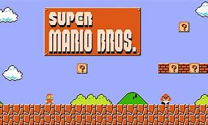
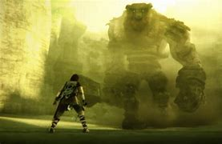
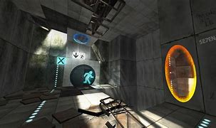
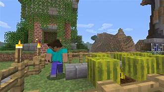

1) Pacman: I'm sure we've all heard of the popular arcade game pacman. That yellow circle chomping on fruit and avoiding those pesky ghosts lifted the spirits and lead to lots of wasted time for the kids of the 80s. In 1980, when it was introduced to America it sold over 100,000 units in its first year of game-play, leading to another equally successful game Ms Pac-Man (1981).
2) Super Mario Bros: I'm willing to bet that out of everything on this list, Super Mario Bros is the least surprising thing to include in popular videogames. It was first releaed in Japan on the Famicom. Then later sold to the rest of the world in 1987. Nowadays any 8-bit platformer brings our minds to the mario series.
3) Shadow of the Collosus: This lesser known, but favorite amongst kids in the 2000s, videogame was revolutionary in it's graphics and storytelling mechanics. The thought of truly photoreal games was becoming less of a dream, and more of a reality starting with games like this.
4) Portal: The original Portal and it's sequel, Portal 2, were hits when they came out. The pretty impressive graphics along with the never-before-seen mechanics of a portal that allows transportation to any visible location was absolutely without a doubt groundbreaking.
5) Minecraft: In more recent years, the simple block game, Minecraft has been taking the world by storm. While simple on the surface, this game has hit different in the video game community. Its simplicity leaves the players who don't care for creativity satisfied, but the vast colors and textures that the "blocks" in the game can have makes those with a creative mind blossom.